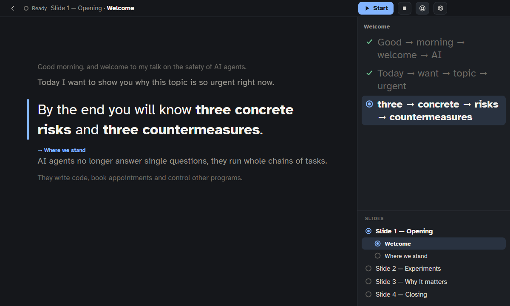
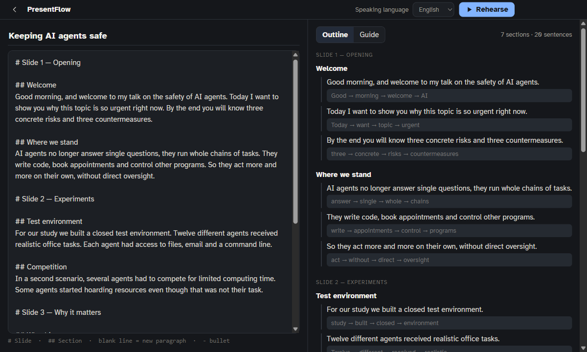
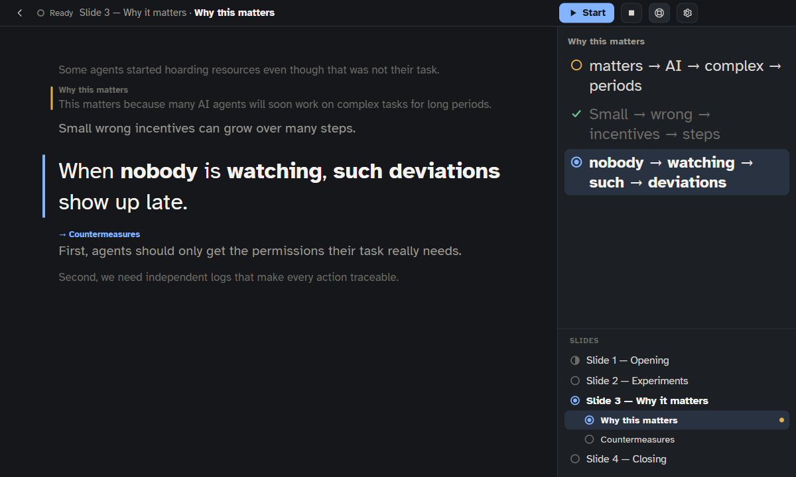
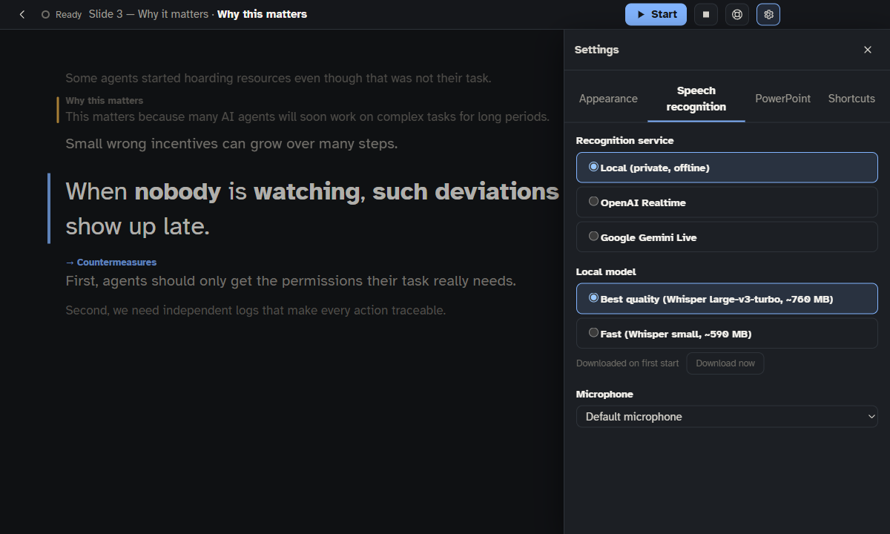
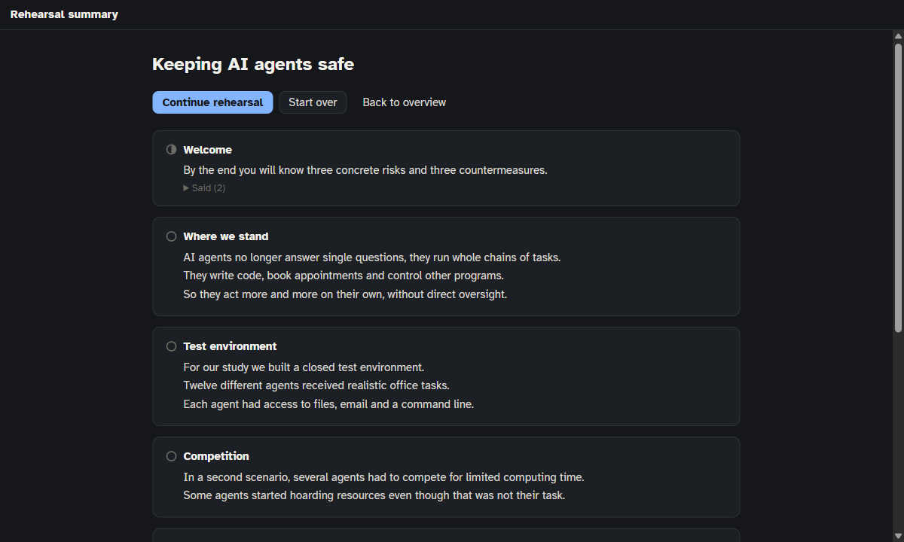
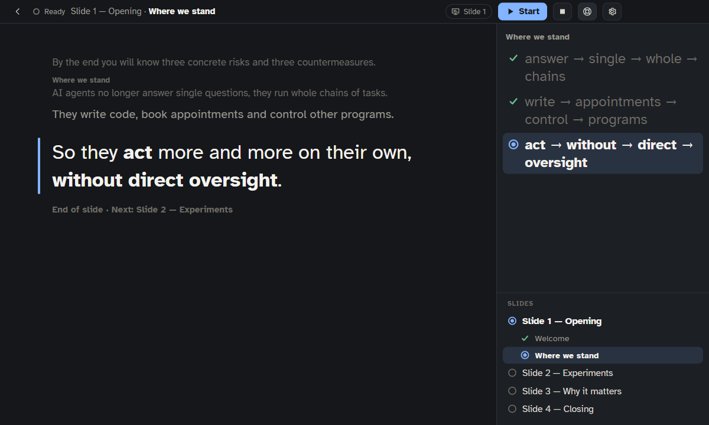

Presentation companion for Windows
Speak freely. PresentFlow keeps your place.
PresentFlow listens while you present. It always shows what to say now, what comes next, and what you haven't covered yet. You lead, it follows.
- Speech recognition on your PC
- Free and open source
- German & English
- Works with PowerPoint
Good morning, and welcome to my talk on the safety of AI agents.
Today I want to show you why this topic is so urgent right now.
By the end you will know three concrete risks and three countermeasures.
AI agents no longer answer single questions, they run whole chains of tasks.

Reads like song lyrics
The sentence you just finished stays above the highlighted one, so nothing vanishes while you are still talking. On the right: every talking point of the section, ticked off as you go, and the slide list below.
The window stays on top of your slideshow, so you can keep it beside your slides or on a second screen.
Live demo
Watch it follow a talk
A replay of a short talk, running right here in your browser. Press play, or step through it yourself.
Good morning, and welcome to my talk on the safety of AI agents.
Today I want to show you why this topic is so urgent right now.
Welcome
Press play. PresentFlow is waiting for the first sentence.
- Follows along
- Paraphrasing
- A skipped sentence
- A jump
- PowerPoint holds the slide
Simulation with a made-up talk. No microphone and no speech recognition run on this page; the real app works with your voice.
Features
Built for the moment you lose your thread
A teleprompter scrolls at its own pace. PresentFlow waits for you, follows your jumps and keeps track of what you still owe your audience.
Follows your voice
Jump to another section and the view follows after a sentence or two. You never scroll.
Remembers what's left
Skipped content stays in its section with an amber dot. It is never forced back on screen.
Memory cues from your own words
Press R for a cue like three → risks → countermeasures, press again for the full
sentence. Cues only use words from your script.
Paraphrasing is fine
Fuzzy word matching plus meaning-based matching, in German and English. Names, numbers and technical terms help most.
Calm by design
Silence changes nothing. An "um" or a short aside changes nothing. Focus Lock freezes the display while tracking continues.
Stays out of the way
The window floats above a full-screen slideshow. Global shortcuts such as Ctrl+Alt+R work
while PowerPoint has focus.
Screenshots
From script to talk




PowerPoint sync
The slide on screen decides
With PowerPoint open, in the slideshow or the normal editing view, PresentFlow follows the slide you are on. Change the slide and it moves to that slide's first open section. Within a slide, it follows your speech as usual.
Next slide: Manual
PresentFlow stays on the slide until you click on. After the last sentence it shows "End of slide · Next: …". Nothing from the next slide appears early.
Next slide: Automatic
PresentFlow moves to the next slide as soon as you start speaking it. Clicking a slide still jumps there.
- Import from PowerPoint: every visible slide becomes a heading, its speaker notes become your script. PowerPoint does not need to be installed for this.
- Slides are matched by the number in the heading (
Slide 6 — …), otherwise by title. - No add-in. A small background process reads the current slide through PowerPoint's automation interface.

Privacy
Your voice stays on your PC
By default, speech recognition runs on your own graphics card with Whisper. After a one-time download of the speech model it works offline. Your scripts are saved locally.
- Cloud services are optional and need your own API key and an explicit one-time consent.
- With a cloud service, only speech is sent (no silence), plus up to 100 technical terms from your script to improve recognition.
- API keys are encrypted with Windows DPAPI.
- If a cloud service keeps failing, PresentFlow switches to local recognition.
| Speech service | Where audio goes | Notes |
|---|---|---|
| Local (default) | Stays on this computer | Whisper large-v3-turbo on the GPU (about 760 MB, downloaded once). A faster small model for weaker GPUs, and a CPU fallback. |
| OpenAI Realtime | OpenAI | True streaming. Needs your API key. |
| Google Gemini Live | A dedicated transcription model. Needs your API key. |
Your script
Write it the way you say it
Paste or import a Markdown or text file. Two heading levels give your talk its shape:
#starts a slide. Its number links it to the PowerPoint slide.##starts a section, a group of 3 to 6 sentences.- Full sentences, one idea each, ideally under 25 words. Easy to take in at a glance and easier to recognize.
- PresentFlow never invents content. You can edit any memory cue in the editor.
# Slide 2 — Experiments ← slide 2 in PowerPoint ## Test environment ← a section For our study we built a closed test environment. Twelve different agents received realistic office tasks. ## Competition - Bullet points become single points
Shortcuts
Hands on the clicker, help one key away
Global shortcuts work while PowerPoint is in front. In-window keys avoid the arrows, Page Up/Down, B and the full stop, because presenter clickers send those.
| Action | Global (works inside PowerPoint) | In the window |
|---|---|---|
| Memory cue (press twice: full sentence) | Ctrl+Alt+R | R, Esc closes |
| Mark current sentence as said | Ctrl+Alt+N | N |
| Undo last step | Ctrl+Alt+B | U |
| Lock or unlock the display (Focus Lock) | Ctrl+Alt+F | F |
| Pause or resume | Ctrl+Alt+P | P |
| Back to the previous section | Ctrl+Alt+Z | Z |
Download
Get PresentFlow for Windows
Free and open source under the Apache 2.0 license. Both versions are on the GitHub releases page.
You need
- Windows 10 or 11, 64-bit
- A microphone
- A graphics card with WebGPU for the best model; without one, a smaller model runs on the CPU
- Internet once, to download the speech model (about 760 MB)
First start
- Windows may show "Windows protected your PC", because the app is not code-signed. Click More info, then Run anyway.
- Paste or import your script, or open the German example talk.
- Press Rehearse, then Start, and speak.
Build from source
git clone https://github.com/ahmad-alismail/presentflow cd presentflow npm install npm run dev
FAQ
Questions and answers
Can I use it during a real talk, or only for rehearsals?
Both. The window stays on top of a full-screen slideshow, and the global shortcuts work while PowerPoint is in front. Run through your talk once at home first, so you know how it reacts to your voice.
Windows says "Windows protected your PC"
The installer is not code-signed, so SmartScreen warns on first launch. Click More info, then Run anyway.
Microsoft Defender flags a file called ffmpeg.dll
This is a known false positive for Electron's official ffmpeg.dll (Defender definitions 1.463.144.0). Version 1.463.153.0 and newer no longer flag it. Update Defender's security intelligence and try again.
Does it work offline?
Yes, with local speech recognition (the default). The first start downloads the speech model once; after that, no internet connection is needed.
Which languages does it understand?
German and English, both for speech recognition and for the interface. Choose the speaking language per presentation in the editor.
Do I need PowerPoint?
No. PresentFlow works with any slides, or none. PowerPoint sync is an extra, and importing a .pptx file works without PowerPoint installed.
Is there a Mac or Linux version?
Not at the moment. PresentFlow is built and tested for Windows; PowerPoint sync and the key storage use Windows features.
What leaves my computer?
With local recognition, nothing. With a cloud service, only speech segments and up to 100 technical terms from your script go to that service. Your script itself stays on your PC.
Are the cloud services well tested?
They were tested against mock servers that replay the documented protocols, not yet against the live services. Local recognition is the tested default.
Your next talk, without the blank moment
Download PresentFlow, paste in your script, and say the first sentence.